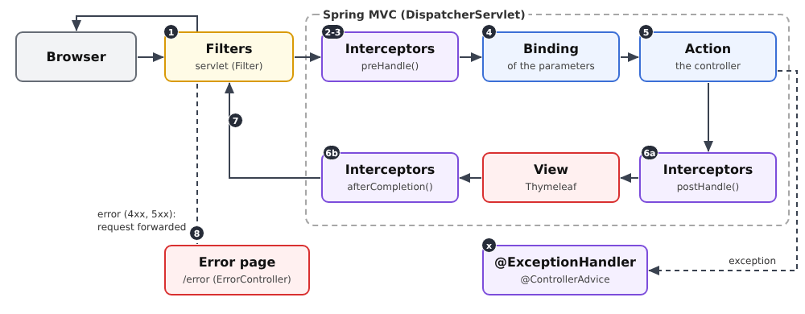
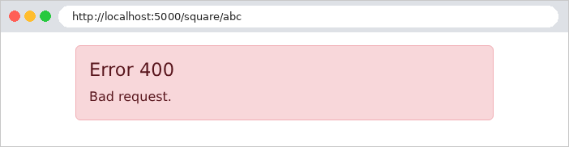
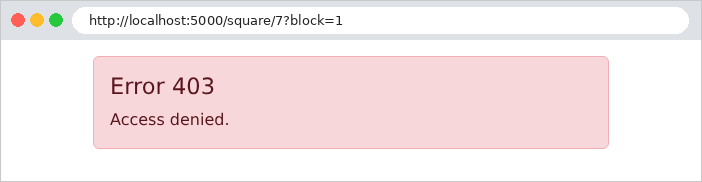
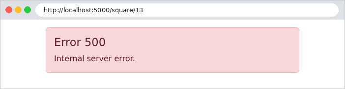

7. El ciclo de vida de una solicitud
Entre la llegada de una solicitud y la ejecución de la acción intervienen varios tipos de objetos, cada uno con un rol específico. Ya nos hemos encontrado con algunos: el manejador de archivos estáticos, [LocaleResolver] (capítulo 5), el filtro del ejemplo 23, los resolvedores de argumentos ([HandlerMethodArgumentResolver], ejemplo 12) y [@ControllerAdvice] (ejemplo 15). Es momento de situarlos en contexto unos respecto de otros.
Hay dos capas. La primera consta del servidor ([Tomcat]) y del estándar Servlet ([Java]): un servlet es un objeto que procesa solicitudes (HTTP), y los filtros de servlet pueden envolverlo para actuar antes y después de él. La segunda capa es [Spring MVC] en sí, que es simplemente un servlet, [DispatcherServlet]: selecciona la acción, vincula sus parámetros, la ejecuta y luego renderiza la vista. Dentro de él, los interceptores pueden actuar antes y después de la acción. Mientras que [ASP.NET Core] tiene middleware y filtros (MVC), [Spring] tiene filtros de servlet e interceptores. El caso de estudio utiliza la mayoría de estos objetos:

Objeto | Rol | En el caso de estudio |
Filtro de servlet | Prepara la solicitud; no conoce la acción | Filtros de [Spring Security]: lee el token; acceso denegado sin una conexión |
Interceptor | código antes y después de la acción; conoce la acción | (no se usa: los roles se verifican con [@PreAuthorize], véase el capítulo 8, y [CommonModel] completa el modelo) |
resolvedor de argumentos | proporciona el valor de un parámetro de la acción | los de [Spring MVC]: formularios, validación, [BindingResult] |
[@ExceptionHandler] | Convierte una excepción en una respuesta | sesión no válida: regreso a la página de inicio de sesión |
[/error] página de error | Genera una página de respuesta de error | [ErrorController]: páginas 400, 403, 404, 500 |
7.1. Ejemplo 24: Pasos en el procesamiento de una solicitud
El ejemplo 24 tiene una función que calcula el cuadrado de un número y un objeto de cada tipo. Cada uno escribe una línea en la consola: esto muestra el orden en que se ejecutan. Los números indicados corresponden a los del diagrama.
| 24-lifecycle/
├── src/main/java/example24/
│ ├── config/
│ │ └── WebConfig.java
│ ├── controllers/
│ │ ├── CalcController.java
│ │ └── ErrorPageController.java
│ ├── filters/
│ │ ├── Block.java
│ │ ├── BlockInterceptor.java
│ │ ├── Timing.java
│ │ ├── TimingInterceptor.java
│ │ ├── IntegerParam.java
│ │ ├── IntegerParamResolver.java
│ │ ├── LoggerFilter.java
│ │ └── ErrorPageAdvice.java
│ └── Example24Application.java
├── src/main/resources/
│ ├── templates/
│ │ ├── calc/
│ │ │ └── result.html
│ │ ├── error.html
│ │ └── layout.html
│ └── application.properties
└── pom.xml
|
Los archivos [pom.xml], [application.properties], y [Example24Application.java] son los de los ejemplos anteriores.
7.1.1. El filtro de servlet
El archivo [filters/LoggerFilter.java]:
| package example24.filters;
import java.io.IOException;
import org.springframework.stereotype.Component;
import org.springframework.web.filter.OncePerRequestFilter;
import jakarta.servlet.FilterChain;
import jakarta.servlet.ServletException;
import jakarta.servlet.http.HttpServletRequest;
import jakarta.servlet.http.HttpServletResponse;
// un FILTRO de servlet: ve pasar cada solicitud ANTES de Spring MVC, y la
// respuesta DESPUÉS. @Component: Spring Boot lo agrega a la cadena de filtros.
@Component
public class LoggerFilter extends OncePerRequestFilter {
@Override
protected void doFilterInternal(HttpServletRequest request, HttpServletResponse response, FilterChain next)
throws ServletException, IOException {
String requestLine = request.getMethod() + " " + request.getRequestURI()
+ (request.getQueryString() == null ? "" : "?" + request.getQueryString());
System.out.println();
System.out.println("--- " + requestLine);
System.out.println("1. filter (before)");
next.doFilter(request, response); // todo el resto: Spring MVC, acción, vista
System.out.println("7. filter (after: code " + response.getStatus() + ")");
}
}
|
- líneas 15-16: un filtro, como el del ejemplo 23. [OncePerRequestFilter] es una subclase de [Spring] que implementa la interfaz [Filter] del estándar Servlet y garantiza una única ejecución por solicitud; sobrescribimos su método [doFilterInternal], que se llama en cada solicitud. Mediante [@Component], [Spring Boot] agrega el filtro a la cadena de filtros del servidor;
- líneas 21-22: el método, la ruta y los parámetros de la solicitud. El filtro no sabe nada de la acción que procesará la solicitud: interviene antes que [Spring MVC], que todavía no la ha seleccionado;
- línea 26: el filtro pasa la solicitud al resto de la cadena (los demás filtros y luego [DispatcherServlet]) y espera a que termine. Si no lo llamara, la solicitud se detendría allí (tendría entonces que generar la respuesta por sí mismo). El código colocado antes de esta llamada se ejecuta a la ida; el código colocado después se ejecuta a la vuelta: el filtro "envuelve" todo lo demás;
- línea 27: en el camino de regreso, el filtro ve el código de estado de la respuesta.
7.1.2. Interceptores
Un interceptor se aplica a todas las acciones de la aplicación (véase [WebConfig] más adelante). Para que actúe solo sobre ciertas acciones, marcamos esas acciones con una anotación personalizada que el interceptor buscará. El archivo [filters/Block.java]:
| package example24.filters;
import java.lang.annotation.ElementType;
import java.lang.annotation.Retention;
import java.lang.annotation.RetentionPolicy;
import java.lang.annotation.Target;
// una anotación que marca un controlador; BlockInterceptor la busca
@Target(ElementType.TYPE)
@Retention(RetentionPolicy.RUNTIME)
public @interface Block {
}
|
- línea 11: [@interface] declara una anotación. Esta anotación no tiene parámetros: basta con su sola presencia;
- línea 9: [@Target] especifica dónde puede aplicarse la anotación: en este caso, sobre un tipo (una clase);
- línea 10: [@Retention(RetentionPolicy.RUNTIME)]: la anotación se conserva en el código compilado y sigue siendo legible durante la ejecución. Sin esto, el compilador la eliminaría y el interceptor no podría encontrarla.
El archivo [filters/Timing.java] es idéntico, salvo por el nombre. El archivo [filters/BlockInterceptor.java]:
| package example24.filters;
import org.springframework.web.method.HandlerMethod;
import org.springframework.web.servlet.HandlerInterceptor;
import jakarta.servlet.http.HttpServletRequest;
import jakarta.servlet.http.HttpServletResponse;
// un INTERCEPTOR: se ejecuta dentro de Spring MVC, una vez elegida la acción.
// Este decide si la acción puede ejecutarse.
public class BlockInterceptor implements HandlerInterceptor {
// preHandle: antes de la acción; devolver false detiene allí el procesamiento
@Override
public boolean preHandle(HttpServletRequest request, HttpServletResponse response, Object handler)
throws Exception {
// handler: lo que manejará la solicitud; para una acción, un HandlerMethod.
// A diferencia del filtro, el interceptor conoce por lo tanto la acción objetivo.
if (handler instanceof HandlerMethod action && action.getBeanType().isAnnotationPresent(Block.class)) {
System.out.println("2. Block interceptor (targeted action: " + action.getMethod().getName() + ")");
if (request.getParameter("block") != null) {
// una respuesta de error 403 (acceso denegado), y nada más
response.sendError(HttpServletResponse.SC_FORBIDDEN);
return false; // ni enlace ni acción
}
}
return true;
}
}
|
- línea 11: un interceptor implementa la interfaz [HandlerInterceptor] de [Spring MVC]. Sus tres métodos, [preHandle], [postHandle] y [afterCompletion], tienen una implementación predeterminada que no hace nada: solo sobrescribimos los que necesitamos;
- línea 15: [preHandle] se ejecuta antes de la acción, e incluso antes de que se vinculen sus parámetros. Su parámetro, [handler], es lo que procesará la solicitud: para una acción, un objeto [HandlerMethod] que describe el método del controlador;
- línea 19: a diferencia del filtro, el interceptor sí sabe a qué acción apunta. [handler instanceof HandlerMethod action] verifica el tipo del objeto y, si coincide, lo almacena en la variable [action], que es del tipo correcto. [getBeanType()] especifica la clase del controlador; [isAnnotationPresent(Block.class)] indica si lleva la anotación [@Block];
- líneas 21-25: un interceptor rechaza la solicitud devolviendo [false]: el resto del proceso (vinculación, acción, vista) no se ejecuta. Entonces debe generar la respuesta por sí mismo: en este caso, [sendError(403)] crea una respuesta de error de "acceso denegado", cuya página generará el servidor (veremos cómo);
- Línea 27: [true]: la solicitud continúa.
El archivo [filters/TimingInterceptor.java]:
| package example24.filters;
import org.springframework.web.method.HandlerMethod;
import org.springframework.web.servlet.HandlerInterceptor;
import org.springframework.web.servlet.ModelAndView;
import jakarta.servlet.http.HttpServletRequest;
import jakarta.servlet.http.HttpServletResponse;
// un segundo interceptor: mide la duración del procesamiento
public class TimingInterceptor implements HandlerInterceptor {
private static final String KEY = "timing";
private static boolean concerned(Object handler) {
return handler instanceof HandlerMethod action && action.getBeanType().isAnnotationPresent(Timing.class);
}
// antes de la acción (y antes del enlace de sus parámetros)
@Override
public boolean preHandle(HttpServletRequest request, HttpServletResponse response, Object handler) {
if (concerned(handler)) {
System.out.println("3. Timing interceptor (before)");
// la hora de inicio, almacenada en un atributo de la solicitud (ámbito request)
request.setAttribute(KEY, System.nanoTime());
}
return true;
}
// después de la acción, ANTES de la vista; no se invoca si la acción lanzó una excepción
@Override
public void postHandle(HttpServletRequest request, HttpServletResponse response, Object handler,
ModelAndView mav) {
if (concerned(handler)) {
System.out.println("6a. Timing interceptor (after the action; chosen view: "
+ (mav == null ? null : mav.getViewName()) + ")");
}
}
// al final de todo, DESPUÉS de la vista; siempre se invoca, con la posible excepción
@Override
public void afterCompletion(HttpServletRequest request, HttpServletResponse response, Object handler,
Exception exception) {
if (concerned(handler) && request.getAttribute(KEY) instanceof Long start) {
long ms = (System.nanoTime() - start) / 1_000_000;
String outcome = exception == null ? "" : ", exception " + exception.getClass().getSimpleName();
System.out.println("6b. Timing interceptor (end, " + ms + " ms" + outcome + ")");
}
}
}
|
- líneas 15-17: el interceptor solo se interesa por las acciones de los controladores anotados con [@Timing];
- Líneas 21-28: antes de la acción, se registra la hora de inicio ([System.nanoTime()], en nanosegundos) y se almacena en un atributo de solicitud (ámbito de solicitud; véase el capítulo 6);
- líneas 32-38: [postHandle] se ejecuta después de la acción y antes de la vista. Recibe el [ModelAndView] producido por la acción (el nombre de la vista y el modelo) y todavía puede modificarlo. No se llama si la acción lanzó una excepción;
- líneas 42-49: [afterCompletion] se ejecuta al final de todo, después de la vista, independientemente de si todo salió bien o no: es el lugar adecuado para liberar un recurso o medir el tiempo de ejecución. Su último parámetro es la excepción, si la hubo. Línea 44: [instanceof Long start] verifica y convierte el valor del atributo en un solo paso.
7.1.3. Vinculación de parámetros
El archivo [filters/IntegerParam.java]:
| package example24.filters;
import java.lang.annotation.ElementType;
import java.lang.annotation.Retention;
import java.lang.annotation.RetentionPolicy;
import java.lang.annotation.Target;
// un parámetro entero, leído de la ruta por IntegerParamResolver (vea el ejemplo 12)
@Target(ElementType.PARAMETER)
@Retention(RetentionPolicy.RUNTIME)
public @interface IntegerParam {
}
|
Una anotación, esta vez sobre un parámetro (línea 9). El archivo [filters/IntegerParamResolver.java]:
| package example24.filters;
import java.util.Map;
import org.springframework.core.MethodParameter;
import org.springframework.web.bind.support.WebDataBinderFactory;
import org.springframework.web.context.request.NativeWebRequest;
import org.springframework.web.context.request.RequestAttributes;
import org.springframework.web.method.support.HandlerMethodArgumentResolver;
import org.springframework.web.method.support.ModelAndViewContainer;
import org.springframework.web.servlet.HandlerMapping;
// el enlace de un parámetro @IntegerParam Integer: la variable de ruta del mismo nombre,
// convertida a entero, o null si no es un entero
public class IntegerParamResolver implements HandlerMethodArgumentResolver {
@Override
public boolean supportsParameter(MethodParameter parameter) {
return parameter.hasParameterAnnotation(IntegerParam.class) && parameter.getParameterType() == Integer.class;
}
@Override
public Object resolveArgument(MethodParameter parameter, ModelAndViewContainer mavContainer,
NativeWebRequest request, WebDataBinderFactory binderFactory) {
// las variables de ruta ({n}...), almacenadas por Spring en un atributo de la solicitud
@SuppressWarnings("unchecked")
Map<String, String> variables = (Map<String, String>) request.getAttribute(
HandlerMapping.URI_TEMPLATE_VARIABLES_ATTRIBUTE, RequestAttributes.SCOPE_REQUEST);
String value = variables == null ? null : variables.get(parameter.getParameterName());
System.out.println("4. parameter binding (received value: \"" + value + "\")");
try {
return Integer.valueOf(value);
} catch (NumberFormatException e) {
return null; // la acción decidirá
}
}
}
|
Un resolvedor de argumentos, como el del ejemplo 12:
- líneas 18-20: maneja los parámetros de tipo [Integer] anotados con [@IntegerParam];
- líneas 27-28: [Spring MVC] ya analizó la ruta ([/square/{n}]) al seleccionar la acción; almacenó las variables de la ruta en un atributo de solicitud, en forma de un diccionario [name -> value];
- línea 29: el valor de la variable que lleva el nombre del parámetro ([n]);
- líneas 31-35: el valor convertido a entero, o [null] si no es un entero. Un valor no válido no detiene nada: decide la acción.
7.1.4. Manejo de excepciones
El archivo [filters/ErrorPageAdvice.java]:
| package example24.filters;
import org.springframework.http.HttpStatus;
import org.springframework.web.bind.annotation.ControllerAdvice;
import org.springframework.web.bind.annotation.ExceptionHandler;
import org.springframework.web.servlet.ModelAndView;
// @ControllerAdvice + @ExceptionHandler: convierten una excepción, lanzada por
// cualquier acción, en una respuesta (aquí, para toda la aplicación)
@ControllerAdvice
public class ErrorPageAdvice {
// solo las IllegalStateException: las demás excepciones siguen su camino
@ExceptionHandler(IllegalStateException.class)
public ModelAndView error(IllegalStateException e) {
System.out.println("x. @ExceptionHandler (" + e.getClass().getSimpleName() + ": " + e.getMessage() + ")");
// en lugar de la página de error por defecto, nuestra vista [error], con el código 500
ModelAndView mav = new ModelAndView("error", HttpStatus.INTERNAL_SERVER_ERROR);
mav.addObject("code", 500);
return mav;
}
}
|
- línea 10: [@ControllerAdvice] convierte esta clase en un complemento de todos los controladores (véase el ejemplo 15);
- líneas 14-15: un método [@ExceptionHandler] se llama cuando una acción lanza una excepción del tipo especificado, en este caso [IllegalStateException] (o de un tipo derivado). Si se coloca en un controlador, se aplicaría solo a las acciones de ese controlador; en un [@ControllerAdvice], se aplica a toda la aplicación. Recibe la excepción como parámetro y genera la respuesta igual que lo haría una acción;
- líneas 18-20: en lugar de la página de error predeterminada, la vista [error], con el código de estado 500. Un [ModelAndView] combina lo que una acción suele devolver en dos partes: el nombre de la vista y el modelo (y aquí, el código de estado).
Las demás excepciones no se tratan aquí: veremos más adelante qué sucede con ellas.
7.1.5. Configuración
El archivo [config/WebConfig.java]:
| package example24.config;
import java.util.List;
import org.springframework.context.annotation.Configuration;
import org.springframework.web.method.support.HandlerMethodArgumentResolver;
import org.springframework.web.servlet.config.annotation.InterceptorRegistry;
import org.springframework.web.servlet.config.annotation.ResourceHandlerRegistry;
import org.springframework.web.servlet.config.annotation.WebMvcConfigurer;
import example24.filters.BlockInterceptor;
import example24.filters.TimingInterceptor;
import example24.filters.IntegerParamResolver;
// la configuración de Spring MVC, complementada
@Configuration
public class WebConfig implements WebMvcConfigurer {
// Bootstrap, compartido por los ejemplos: la carpeta examples/common/bootstrap
// se sirve bajo la URL /bootstrap/...
@Override
public void addResourceHandlers(ResourceHandlerRegistry registry) {
registry.addResourceHandler("/bootstrap/**")
// "file:": una carpeta del disco, relativa a la carpeta actual. Dos
// intentos: iniciado desde la carpeta del ejemplo, o desde [examples]
.addResourceLocations("file:../common/bootstrap/", "file:common/bootstrap/");
}
// los interceptores, ejecutados en el orden en que se agregan
@Override
public void addInterceptors(InterceptorRegistry registry) {
registry.addInterceptor(new BlockInterceptor());
registry.addInterceptor(new TimingInterceptor());
}
// el enlace de los parámetros @IntegerParam
@Override
public void addArgumentResolvers(List<HandlerMethodArgumentResolver> resolvers) {
resolvers.add(new IntegerParamResolver());
}
}
|
- líneas 30-34: los interceptores se agregan a [Spring MVC], que los ejecuta en el orden en que se agregaron (y [postHandle], [afterCompletion] en orden inverso). Se aplican a todas las acciones; podrían limitarse a ciertas rutas ([.addPathPatterns("/square/**")]), pero nuestras anotaciones son más precisas;
- líneas 37-40: el resolvedor de argumentos, como en el ejemplo 12.
7.1.6. El controlador y la página de error
El archivo [controllers/CalcController.java]:
| package example24.controllers;
import org.springframework.http.HttpStatus;
import org.springframework.stereotype.Controller;
import org.springframework.ui.Model;
import org.springframework.web.bind.annotation.GetMapping;
import org.springframework.web.server.ResponseStatusException;
import example24.filters.Block;
import example24.filters.Timing;
import example24.filters.IntegerParam;
// dos anotaciones colocadas en el controlador: los interceptores las buscan
@Block
@Timing
@Controller
public class CalcController {
@GetMapping("/square/{n}")
public String square(@IntegerParam Integer n, Model model) {
System.out.println("5. action square(" + n + ")");
if (n == null) {
// un error 400: vea ErrorPageController
throw new ResponseStatusException(HttpStatus.BAD_REQUEST);
}
if (n == 13) {
throw new IllegalStateException("13 brings bad luck"); // un error "inesperado"
}
model.addAttribute("n", n);
model.addAttribute("square", n * n);
return "calc/result";
}
}
|
- líneas 14-15: las dos anotaciones que buscan los interceptores;
- línea 20: el parámetro [n], proporcionado por nuestro resolvedor;
- líneas 22-25: un parámetro no válido: un error 400 (solicitud no válida). La [ResponseStatusException] (véase el ejemplo 21) es transformada por [Spring MVC] en una respuesta de error sin contenido;
- líneas 26-28: un error "inesperado", para ver [@ExceptionHandler] en acción;
- líneas 29-31: el caso normal. El archivo [templates/calc/result.html] muestra el resultado:
| <!doctype html>
<html xmlns:th="http://www.thymeleaf.org" th:replace="~{layout :: page(~{::main})}">
<body>
<main>
<h1 class="h4" th:text="|${n} squared = ${square}|">7 squared = 49</h1>
</main>
</body>
</html>
|
- Línea 2: la página usa la plantilla [templates/layout.html], como es habitual (véase el ejemplo 15): un título y [Bootstrap];
- Línea 5: entre dos barras verticales, [|...|] es una cadena en la que [Thymeleaf] reemplaza cada aparición de [${...}] por su valor.
Queda la página de error. Cuando una solicitud da como resultado una respuesta de error (una llamada a [sendError], una [ResponseStatusException], una dirección desconocida o una excepción no controlada), el servidor no devuelve una respuesta vacía: reenvía la solicitud a la dirección [/error] para generar la página que se devolverá y, en el proceso, almacena el código de error en un atributo de solicitud. [Spring Boot] ya proporciona una acción para esta dirección: es la que hasta ahora ha generado las respuestas de error JSON (para [curl]) y la "Whitelabel Error Page" (para un navegador). El archivo [controllers/ErrorPageController.java] la reemplaza:
| package example24.controllers;
import org.springframework.boot.webmvc.error.ErrorController;
import org.springframework.stereotype.Controller;
import org.springframework.ui.Model;
import org.springframework.web.bind.annotation.RequestMapping;
import jakarta.servlet.RequestDispatcher;
import jakarta.servlet.http.HttpServletRequest;
import jakarta.servlet.http.HttpServletResponse;
// la página de error de la aplicación. Una respuesta de error (sendError, excepción
// no controlada) es reenviada por el servidor a la dirección /error; implementar
// ErrorController reemplaza la página de error de Spring Boot por la nuestra.
@Controller
public class ErrorPageController implements ErrorController {
// @RequestMapping sin método HTTP: todos los métodos (GET, POST...)
@RequestMapping("/error")
public String error(HttpServletRequest request, HttpServletResponse response, Model model) {
// el código de error original, almacenado por el servidor en un atributo de la solicitud
Object code = request.getAttribute(RequestDispatcher.ERROR_STATUS_CODE);
int status = code instanceof Integer c ? c : 500;
System.out.println("8. error page " + status + " (request forwarded to /error)");
response.setStatus(status); // la página conserva el código de error
model.addAttribute("code", status);
return "error";
}
}
|
- líneas 15-16: un controlador que implementa la interfaz [ErrorController] de [Spring Boot]. Esta interfaz no tiene métodos; sirve como marcador. En cuanto un bean la implementa, [Spring Boot] elimina su propio manejador de errores;
- línea 19: [@RequestMapping], que no especifica métodos (HTTP), acepta todos los métodos: una solicitud POST reenviada a [/error] sigue siendo una solicitud POST;
- líneas 22-23: el código de error original, almacenado por el servidor en el atributo [RequestDispatcher.ERROR_STATUS_CODE]. [code instanceof Integer c ? c : 500]: si el atributo es un entero, su valor; de lo contrario, 500 (por ejemplo, si se solicita [/error] directamente);
- Líneas 25-27: la página conserva el código de error, que se pasa a la vista.
El archivo [templates/error.html]:
| <!doctype html>
<!--la página de error; su modelo: el código de error-->
<html xmlns:th="http://www.thymeleaf.org" th:replace="~{layout :: page(~{::main})}">
<body>
<main>
<div class="alert alert-danger">
<h1 class="h4" th:text="|Error ${code}|">Error 500</h1>
<!--th:switch / th:case: el primer caso igual al valor; *: todos los demás-->
<p class="mb-0" th:switch="${code}">
<span th:case="400">Bad request.</span>
<span th:case="403">Access denied.</span>
<span th:case="404">Page not found.</span>
<span th:case="*">Internal server error.</span>
</p>
</div>
</main>
</body>
</html>
|
- líneas 9-14: [th:switch] y [th:case]: solo se conserva la primera etiqueta [th:case] cuyo valor es igual al de [th:switch]; [*] corresponde a todo lo demás. La vista se usa tanto para [ErrorPageController] y [ErrorPageAdvice].
7.1.7. Ejecución
Cinco solicitudes: un cálculo normal (http://localhost:5000/square/7), un parámetro no válido ([/square/abc]), una solicitud bloqueada por el interceptor ([/square/7?block=1]), un error inesperado ([/square/13]) y una dirección desconocida ([/unknown]). La consola del servidor:
| --- GET /square/7
1. filter (before)
2. Block interceptor (targeted action: square)
3. Timing interceptor (before)
4. parameter binding (received value: "7")
5. action square(7)
6a. Timing interceptor (after the action; chosen view: calc/result)
6b. Timing interceptor (end, 5 ms)
7. filter (after: code 200)
--- GET /square/abc
1. filter (before)
2. Block interceptor (targeted action: square)
3. Timing interceptor (before)
4. parameter binding (received value: "abc")
5. action square(null)
2026-09-25T18:48:16.146+02:00 WARN 23271 --- [nio-5000-exec-3] .w.s.m.a.ResponseStatusExceptionResolver : Resolved [org.springframework.web.server.ResponseStatusException: 400 BAD_REQUEST]
6b. Timing interceptor (end, 1 ms)
7. filter (after: code 400)
8. error page 400 (request forwarded to /error)
--- GET /square/7?block=1
1. filter (before)
2. Block interceptor (targeted action: square)
7. filter (after: code 403)
8. error page 403 (request forwarded to /error)
--- GET /square/13
1. filter (before)
2. Block interceptor (targeted action: square)
3. Timing interceptor (before)
4. parameter binding (received value: "13")
5. action square(13)
x. @ExceptionHandler (IllegalStateException: 13 brings bad luck)
2026-09-25T18:48:16.174+02:00 WARN 23271 --- [nio-5000-exec-5] .m.m.a.ExceptionHandlerExceptionResolver : Resolved [java.lang.IllegalStateException: 13 brings bad luck]
6b. Timing interceptor (end, 5 ms)
7. filter (after: code 500)
--- GET /unknown
1. filter (before)
7. filter (after: code 404)
8. error page 404 (request forwarded to /error)
|
Este registro muestra:
- el orden de los pasos en el caso normal: el filtro, los interceptores ([preHandle]) en el orden en que se agregaron, la vinculación de parámetros, la acción, [postHandle] (la vista todavía no se ha renderizado), [afterCompletion] (la vista se renderiza) y luego de nuevo el filtro, que ve el código de respuesta final;
- el interceptor que rechaza la solicitud ([/square/7?block=1]) evita todo lo demás en [Spring MVC]: no hay segundo interceptor, ni vinculación, ni acción;
- un parámetro no válido no impide que la acción se ejecute: la propia acción decide ([square(null)]), en este caso lanzando una [ResponseStatusException]. [Spring MVC] pasa cualquier excepción lanzada por una acción a una serie de manejadores de excepciones ([HandlerExceptionResolver]); el de [ResponseStatusException] la convierte en una respuesta de error 400 y la registra (línea [WARN ... Resolved]). Como la acción lanzó una excepción, [postHandle] no se llama; [afterCompletion] se llama, sin excepción: la excepción ya fue manejada;
- la excepción de [/square/13] se maneja de la misma manera, mediante el resolvedor, que busca los métodos [@ExceptionHandler] (paso x). Este método genera una página completa con un código de estado 500: la solicitud termina allí, sin pasar por [/error];
- una respuesta de error sin contenido (400, 403, 404) se convierte en una página pasándola a [/error] (paso 8). Observe que este paso ocurre después de que la solicitud regresa al filtro (paso 7): [sendError] solo marca la respuesta como un error, y es el servidor ([Tomcat]) quien, una vez completada la cadena de filtros, reenvía la solicitud a [/error]. Esta segunda pasada no atraviesa nuestro filtro: [Spring Boot] sí registra el filtro para las solicitudes reenviadas a [/error], pero [OncePerRequestFilter] las deja pasar sin ejecutarlo (este es su comportamiento predeterminado, que podría cambiarse redefiniendo su método [shouldNotFilterErrorDispatch]). En cambio, sí pasa por los interceptores, ya que es [Spring MVC] quien ejecuta la acción [/error]; pero [ErrorPageController] no lleva sus anotaciones y estos no escriben nada;
- para una dirección desconocida, ninguna acción coincide: [Spring MVC] pasa entonces la solicitud al manejador de archivos estáticos (un [ResourceHttpRequestHandler]), que no encuentra ningún archivo y lanza una excepción [NoResourceFoundException], que un resolvedor de excepciones convierte en una respuesta de error 404 (esta vez sin ninguna línea [WARN] en el registro). Los interceptores sí fueron llamados, pero el [handler] que recibieron no es una acción ([HandlerMethod]): no escribieron nada.
Las páginas resultantes:




Verifiquemos que el código de error se conserva:
| curl -i "http://localhost:5000/square/7?block=1"
|
| HTTP/1.1 403
Content-Type: text/html;charset=UTF-8
<!doctype html>
<html lang="en">
<head>
<meta charset="utf-8">
<title>Lifecycle</title>
<link rel="stylesheet" href="/bootstrap/css/bootstrap.min.css">
</head>
<body>
<div class="container py-3">
<main>
<div class="alert alert-danger">
<h1 class="h4">Error 403</h1>
<p class="mb-0">
<span>Access denied.</span>
</p>
</div>
</main>
</div>
</body>
</html>
|
Solo el [span] del caso seleccionado por [th:switch] aparece en la página.
El caso de estudio combina estos mecanismos: un manejador [ErrorController] para las páginas 400, 403, 404 y 500, al que el servidor reenvía todas las respuestas de error, incluidas las de excepciones que nadie ha manejado (la página 500, sin la pila de llamadas); y un [@ExceptionHandler] ([web/HtmlExceptionHandler.java]) para un caso específico: una sesión no válida (la cuenta se eliminó después del inicio de sesión) no muestra una página de error, sino que redirige a la página de inicio de sesión.